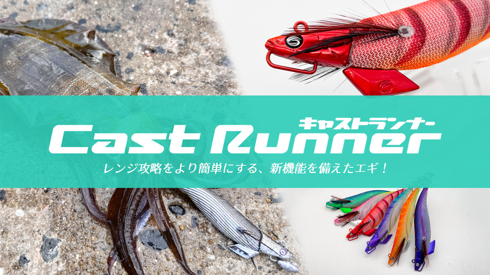
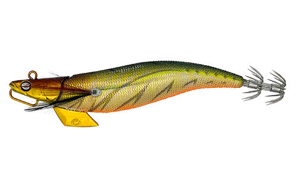
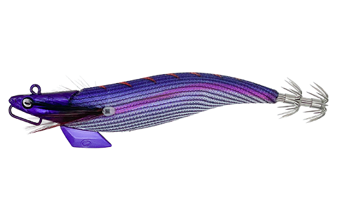
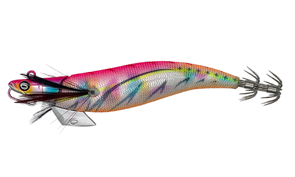
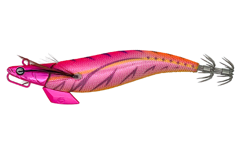
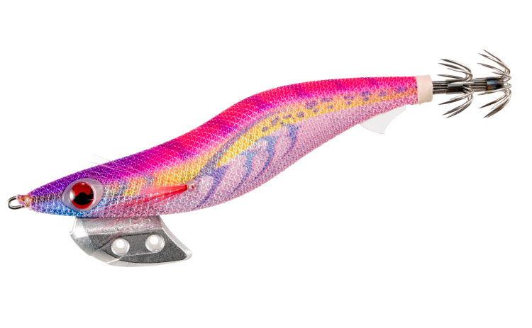
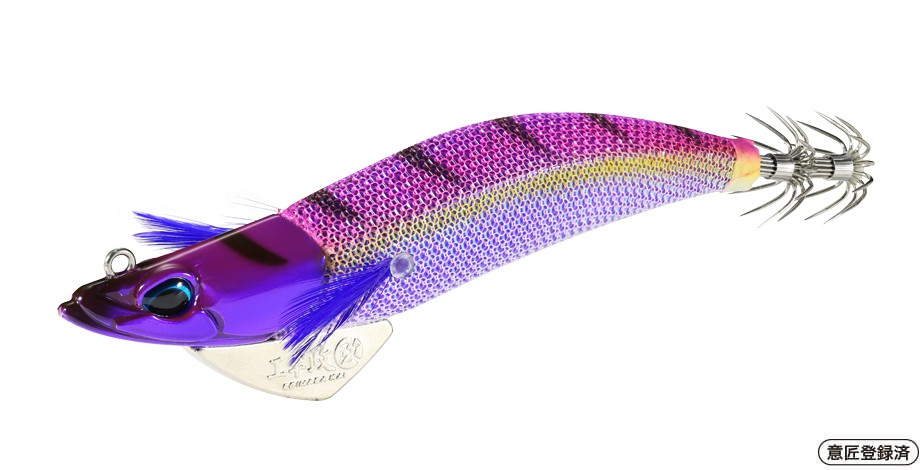
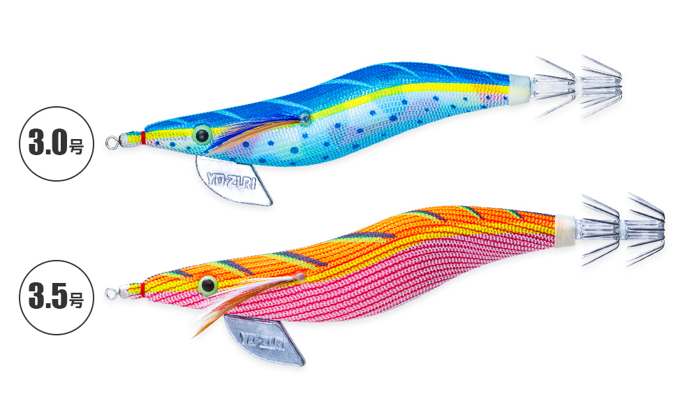

キャストランナー
（エギ）
キャストランナー（Cast Runner）はクレイジーオーシャンのエギです。
最大の特徴はシンカーハンガー。ガン玉やオモリを追加すれば、水深・潮の速さ・風に合わせてその場で沈下速度を調整できます。アップアイ構造で軽いシャクリでもキレのあるダートが出せ、1本で幅広い状況に対応できるのが最大の魅力です。

画像出典:クレイジーオーシャン公式HP
スペック
- メーカー
- クレイジーオーシャン
- タイプ
- エギ（シンカーハンガー付き）
- サイズ・自重
- 3号 12g／3.5号 18g
- ターゲット
- アオリイカ
- 価格
- 1,200円（税別）
- 発売
- 3.5号は発売中／3号は2026年9月
▼今すぐチェック
キャストランナーの特徴
シンカーハンガーで、その場で沈下速度を変えられるエギ
-
シンカーハンガーで沈下速度を調整
シンカーハンガーにガン玉やクリップ式のオモリを付けるだけで、その場でウエイトを調整できる。刻々と変わる水深・潮流・風に、エギを替えずにすぐ対応できる。
-
軽いシャクリでキレのあるダート
アップアイ構造と薄型ヘッド＆キールシンカーの組み合わせで、軽いシャクリでもキレのあるダートを生み出す。
-
イカが好む安定したフリーフォール
ダートだけでなく、イカが抱きやすい安定したフリーフォール姿勢も追求。シャクった後のフォールでしっかり抱かせられる。
キャストランナーの使い方
基本はキャストして着底させ、軽いシャクリでダートさせてからフォールで抱かせる。まずはノーマルの状態で使い、底が取りにくい・潮に流されると感じたら、シンカーハンガーにガン玉を追加して沈下速度を上げる。
逆に浅場ではオモリを足さずにゆっくり見せるなど、1本のエギで状況に合わせたセッティングができます。
キャストランナーの得意な状況
潮の速さや風が変わりやすい堤防・磯で、その日の状況に合わせて沈下速度を調整したい状況が最大の出番。
エギを何本も持ち歩かずに、1本で深場から浅場まで対応したい人にもオススメです。
ワンポイント
オモリを足すと沈下速度は上がりますが、ダートやフォールの姿勢も変わります。まずは軽めのガン玉から試して、底が取れる最小のウエイトを探すのがコツです。
サイズによる沈下速度の目安は、エギ沈下速度計算ツールでも調べられます。
オススメカラー
キャストランナーは全15色展開。オススメのカラーを厳選して紹介します。

#01 アジ/ゴールドアジ柄に金テープのナチュラル系。朝夕マズメのベイトパターンに。

#03 パープル/パープルシルエットがはっきり出るパープル系。ローライトや夜に。

#07 お花畑/マーブル華やかなマーブル系。日中の澄み潮でのアピールに。

#10 パッション/ピンク定番のピンク系。迷ったらまず投げたい1色。
画像出典:クレイジーオーシャン公式HP
キャストランナーに似ているルアー
-

エギ王K ディープ ヤマシタ 詳細はこちら＞速く安定して沈むディープモデル。深場専用ならエギ王K ディープ、1本で調整したいならキャストランナー。
-

エギ政 改 DUO 詳細はこちら＞NORMALとSHALLOWの2タイプでレンジを使い分けるエギ。沈下速度を変えるという考え方が共通する。
-

アオリーQ 大分布巻 YO-ZURI／デュエル 詳細はこちら＞大きなシャクリで縦に誘う復刻モデル。軽いシャクリのキャストランナーと誘い方を変えたい時に。